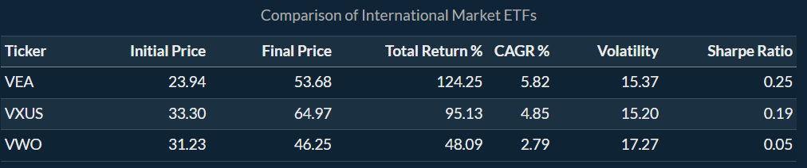
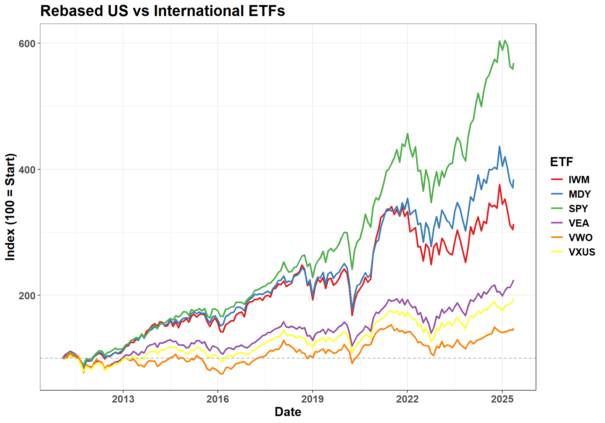

Global Diversification and Individual Investment Goals
Introduction: Rethinking U.S.-Only Portfolios in a Global Economy
In a globalized investment landscape, many individuals still rely heavily on U.S.-based equity funds to build their portfolios. But does this domestic bias limit long-term performance? This project investigates an important question:
How can integrating a diverse mix of international traded funds, in developed or emerging markets boost returns compared to relying solely on U.S. funds, all while meeting individual financial objectives and investment time frames?
Investors face different needs based on their age, income, and financial objectives. A one-size-fits-all U.S.-only portfolio might not offer the best strategy for maximizing growth or managing risk. With access to global markets now easier than ever, we explore whether including international funds offers meaningful advantages—and under what conditions.
Methodology and Analytical Focus
We examined the role of developed and emerging market funds, commodity-linked ETFs, and rebalancing strategies based on macroeconomic indicators such as GDP per capita and inflation. Our individual questions included:
- Can reallocating between developed and emerging markets protect against losses during downturns?
- Do equities from resource-rich countries improve portfolio stability or performance?
- Are developed markets better than emerging ones for long-term growth, especially compared to U.S. funds?
We used historical data from 2011–2025 and constructed hypothetical portfolios using popular ETFs, including SPY, VEA, VWO, and others. Simulated performance and volatility metrics were compared under different strategies, including rebalancing based on economic signals.
Data Sources and Limitations
AlphaVantage: U.S. and international equity ETFs, bond ETFs, and commodity ETFs.
FRED: Macroeconomic data including GDP per capita and inflation rates for selected countries.
Limitations:
- ETF data only spans ~15 years, limiting long-term insights.
- No fees, taxes, or bid-ask spreads were factored in.
- Some countries were grouped simply by GDP/inflation metrics, without deeper macro modeling.
- Resource-sector ETFs showed high volatility and varied availability across countries.
ETF Breakdown and Asset Overview
To evaluate global diversification strategies, we categorized our ETF selections into three major asset classes: stocks (equities), bonds (fixed income), and commodities/alternatives. Each fund offers distinct exposure, risk, and potential return profiles.
Stocks (Equity ETFs)
These ETFs provide exposure to U.S. and international stock markets, spanning companies of various sizes and geographies.
SPY – S&P 500 ETF (U.S.)
Tracks the 500 largest U.S. companies; a benchmark for overall U.S. equity market performance.MDY – S&P MidCap 400 ETF (U.S.)
Represents medium-sized U.S. companies, offering growth-oriented exposure.IWM – Russell 2000 ETF (U.S.)
Covers small-cap U.S. stocks, typically with higher risk and potential return.VEA – Vanguard FTSE Developed Markets ETF
Offers access to stocks in developed markets outside the U.S. and Canada (e.g., Europe, Japan, Australia).VWO – Vanguard FTSE Emerging Markets ETF
Focused on emerging economies like China, India, and Brazil, which may provide higher growth and higher volatility.VXUS - Vanguard Total International Stock ETF Broad exposure to all international markets outside the U.S., including both developed and emerging markets.
Bonds (Fixed Income ETFs)
Bond ETFs contribute portfolio stability and income, and help reduce overall risk.
BND – Vanguard Total Bond Market ETF
Provides broad exposure to U.S. investment-grade bonds including Treasuries, corporate bonds, and mortgage-backed securities.SHY – 1–3 Year Treasury Bond ETF
Invests in short-term U.S. Treasury bonds. Less sensitive to interest rates and lower risk.TLT – 20+ Year Treasury Bond ETF
Tracks long-term U.S. Treasury bonds. Higher duration and more volatility, often used for economic downturn protection.
Commodities & Alternatives
These assets add diversification and serve as hedges against inflation and market volatility.
GLD – SPDR Gold Shares ETF
Reflects the price of gold; commonly used as a safe haven during market stress or inflationary periods.DBA – Invesco Agriculture ETF
Tracks a basket of agricultural commodities like wheat, corn, and soybeans, providing real asset exposure.VNQ – Vanguard Real Estate ETF (REITs)
Invests in real estate investment trusts, offering access to income-producing properties in the U.S. real estate market.
Economic Data:
Inflation: (%, not seasonally adjusted)
GDP per capita: (in U.S. Dollar, not seasonally adjusted, annual)
📐 Financial Metric Formulas
The financial formulas used in the project to calculate Risk and Returns or the assets are shown below.
1. Total Return (%)
\[ \text{Total Return (\%)} = \left( \frac{P_{\text{final}} - P_{\text{initial}}}{P_{\text{initial}}} \right) \times 100 \]
Where:
- \(P_{final}\) : Final price of the asset
- \(P_{initial}\) : Initial price of the asset
2. Compound Annual Growth Rate (CAGR %)
\[ \text{CAGR \%} = \left( \left( \frac{P_{\text{final}}}{P_{\text{initial}}} \right)^{\frac{1}{n}} - 1 \right) \times 100 \]
Where:
- \(n\) : Number of years the asset is held
3. Annualized Volatility
\[ \text{Volatility} = \sigma_{\text{monthly returns}} \times \sqrt{12} \]
Where:
- \(\sigma_{\text{monthly returns}}\) : Standard deviation of monthly log returns
QUESTION 1 - Developed vs Emerging International Markets
To explore whether developed or emerging international markets offer better long-term performance, we analyzed three popular international equity ETFs:
- VEA: Vanguard FTSE Developed Markets ETF
- VWO: Vanguard FTSE Emerging Markets ETF
- VXUS: Vanguard Total International Stock ETF (includes both developed and emerging markets)
We compared their performance from the start of the dataset (approx. 2011) through early 2025 using key financial metrics: total return, compound annual growth rate (CAGR), volatility, and Sharpe ratio (a measure of risk-adjusted return).

Key Findings
VEA (developed markets) was the top performer across most metrics. It delivered the highest total return (124.25%) and the highest CAGR (5.82%) with a relatively moderate level of volatility. Its Sharpe ratio (0.25) indicates a reasonable tradeoff between risk and return. - VXUS, which includes both developed and emerging markets, had lower returns (95.13%) and a slightly lower Sharpe ratio (0.19). This suggests that including emerging markets may have diluted the overall performance. - VWO (emerging markets) had the lowest return (48.09%) and the lowest risk-adjusted performance, with a Sharpe ratio of just 0.05. Despite a higher level of volatility (17.27%), it did not offer better long-term growth.
Interpretation
While emerging markets are often associated with high growth potential, our analysis shows that over the long run (2011–2025), developed international markets significantly outperformed emerging markets in both total and risk-adjusted returns. Investors looking for global diversification may find more consistent results by prioritizing developed market exposure (e.g., via VEA), rather than heavily relying on emerging markets like those captured by VWO. This suggests that strategic international diversification should favor developed markets, especially for investors seeking stability and consistent performance over long horizons.
U.S. vs. International Equity Performance (2011–2025)

Insight: U.S. markets (SPY) outperformed international developed (VEA) and emerging (VWO) markets over this period. However, diversification offered better downside protection during turbulent periods.
Rebalancing Based on Economic Indicators
insert image here
Insight: A constant 75% VEA / 25% VWO allocation slightly underperformed rebalancing strategies based on GDP growth and inflation thresholds. While gains were modest (~0.004% p.a.), rebalancing avoided worse downturns during periods of emerging market underperformance.
Resource-Driven Markets vs. Broad Country ETFs
insert image here
Insight:
Investing in resource-driven ETFS does not provide drastic improvement to portfolio performance as compared to investing in broad-market ETFs.
Volatility and Metrics:
We measured cumulative return, annualized return, and annualized volatility for each ETF. Notably, resource-based ETFs tend to exhibit higher volatility, especially in Japan, Canada, and China—reflecting the cyclical and commodity-driven nature of these sectors.Key Findings:
South Korea’s resource ETF (KRMA) stands out, with an annualized return of 12.4%, compared to just 2.4% for the country’s broad market ETF.
In contrast, resource-focused ETFs in China and Japan produced flatter returns, trailing their broad market counterparts.
Connection to Prior Work
Our findings echo recent literature:
- Attig et al. (2023): International diversification reduces political and inflation risk—consistent with our findings that global exposure (particularly in developed markets) stabilizes long-term performance.
- Moisand & Salmon: Rebalancing improves outcomes, especially during bear markets. Our GDP/inflation-triggered rebalancing shows limited but positive impact.
- Ruano & Barros (2022): Commodities offer a diversification benefit. We found gold and agriculture ETFs lowered volatility, though performance varied by period.
- Ouoba (2016): Resource-rich countries can perform well, but political and fiscal instability pose serious risks—our analysis showed mixed results for resource-sector ETFs.
Conclusion and Future Directions
Is International Diversification Beneficial?
Yes—but with caveats. Developed international equities (VEA) provided more reliable returns than emerging markets (VWO), especially when rebalanced based on macro trends. However, neither matched U.S. equities in cumulative growth.
Key takeaways: - A global mix can help with risk-adjusted returns, but U.S. equities still dominate long-term growth. - Limiting international equity exposure to ~20% appears optimal based on our results. - Bonds and commodity ETFs added the most stability to portfolios. - Rebalancing based on GDP/inflation shows potential but may require longer time horizons to fully realize benefits. - Resource-focused ETFs are too volatile to recommend broadly.
Future Considerations
- Expand the analysis to include more countries and weight by GDP size.
- Explore currency and crypto assets for broader diversification.
- Include tax implications and expense ratios for a more realistic performance picture.
- Assess performance during multiple recession periods.
Individual Report Links
*Prepared for STA 9750 at Baruch College – May 2025. The Money Team: Giulio Orazzo - Salvatore Davi